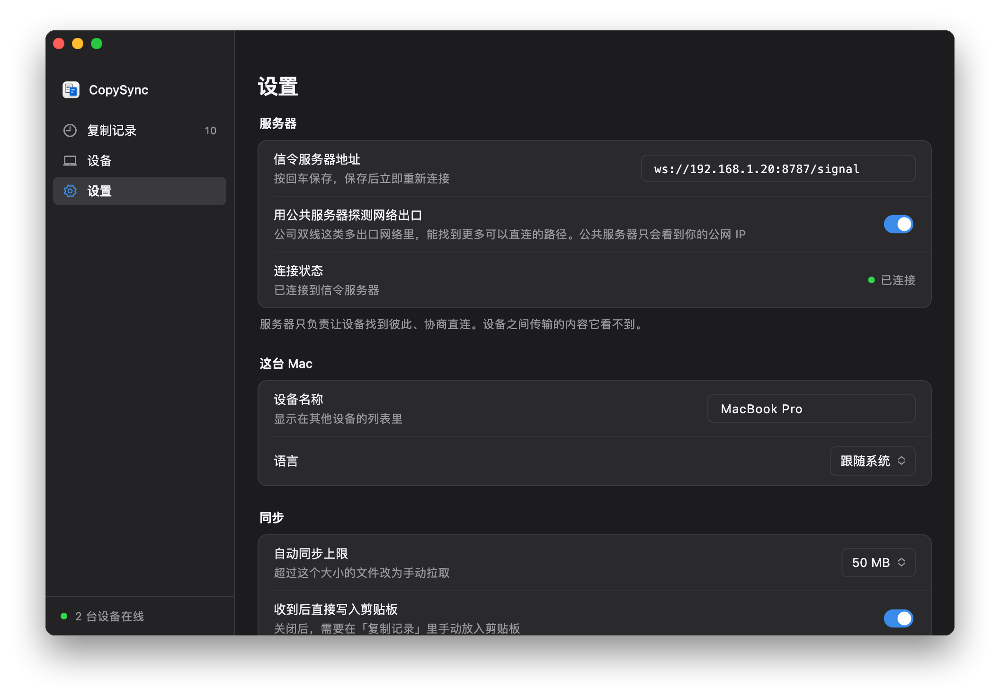

服务器只负责牵线
每台电脑一直连着服务器，靠它找到对方、交换连接信息。连上之后，复制的内容在两台电脑之间直接传输；只有直连打不通时，才经过它中转，内容依然加密。
- 信令，TCP 8787。每台电脑一直连着它，用来发现对方、配对、交换连接信息。
- 直连。在同一个局域网里，内容几乎总是在两台电脑之间直接传输，速度就是局域网的速度。
- 中转，UDP 3478。访客网络、开了 AP 隔离的 Wi‑Fi、不同网段之间互相访问不到时才会用到。
开始之前
- 一台常开的电脑
- Windows 10、11，macOS 13 及以上，或者任意 Linux 都行，两台电脑中的一台也可以。它关机或睡眠时同步会暂停，醒来后自动恢复。NAS、软路由、Mac mini 这类一直开着的设备最合适，内存只占约 15 MB。
- 一个固定的地址
- 在路由器的「DHCP 静态分配」（也叫「地址保留」「IP 与 MAC 绑定」）里给这台电脑固定一个地址。不然路由器换了地址，每台电脑都要重新填。
- 在同一个网络里
- 设备连同一个 Wi‑Fi 或有线网络就行。访客网络、开了「AP 隔离」的 Wi‑Fi 不让设备互相访问，需要换个网络或关掉隔离。
- 离开这个网络就不同步
- 服务器只在局域网里访问得到，笔记本带出门后，回来才会继续同步。想在任何地方都能同步，需要一台有公网 IP 的服务器，见首页的「安装」。
安装服务器
选服务器所在电脑的系统。安装脚本会自动找到本机的局域网地址，把服务器设成开机自动运行，最后显示客户端要填的地址。
Windows
- 下载 copysync-server-windows-amd64.zip，右键选「全部解压缩」。
- 打开解压出的文件夹，双击
install.cmd。提示「Windows 已保护你的电脑」时，点「更多信息」，再点「仍要运行」；弹出用户账户控制时点「是」。服务器还没有代码签名，所以会这样问一次。 - 安装在新打开的窗口里进行。最后显示的
ws://…/signal就是客户端要填的地址。
- 作为 Windows 服务运行：开机就启动，不用登录，也没有窗口。在「服务」里叫 CopySync Server。
- 防火墙已经放行：脚本添加了一条只针对 copysync-server.exe 的入站规则，不用自己开端口。
- 地址认错了（比如装了虚拟机或 VPN，有好几块网卡）：在解压出的文件夹的地址栏里输入
cmd回车，运行install.cmd 192.168.1.20，换成你的地址。 - 支持 Windows 10、11，x64。
- copysync-server.exe
- install.cmd双击
- install.ps1
- README.md
- uninstall.cmd
> 停止旧版本 > 安装到 C:\Program Files\CopySync Server > 注册服务 CopySyncServer（中转地址 192.168.1.20） > 在 Windows 防火墙里放行 > 启动 √ 已启动 安装完成：copysync-server 1.3.3，作为 Windows 服务开机自动运行 在每台电脑的 CopySync「设置 → 信令服务器地址」填： ws://192.168.1.20:8787/signal 程序 C:\Program Files\CopySync Server 日志 C:\ProgramData\CopySync Server\server.log 重启 Restart-Service CopySyncServer（管理员 PowerShell） 卸载 双击 uninstall.cmd
| 状态 | 管理员 PowerShell 里运行 Get-Service CopySyncServer，或者在「服务」里找 CopySync Server |
|---|---|
| 日志 | C:\ProgramData\CopySync Server\server.log |
| 重启 | 管理员 PowerShell 里运行 Restart-Service CopySyncServer |
| 升级 | 下载新版本，解压后再双击 install.cmd，原来的设置保留 |
| 卸载 | 双击 uninstall.cmd，服务、防火墙规则和文件一并删除 |
macOS
- 打开「终端」，逐行运行：
curl -LO https://github.com/baiyuze/copysync/releases/latest/download/copysync-server-macos.tar.gz tar xzf copysync-server-macos.tar.gz cd copysync-server-macos ./install.sh - 最后显示的
ws://…/signal就是客户端要填的地址。
- 不需要管理员权限。登录这台 Mac 后自动在后台运行，意外退出会被系统重新拉起。
- 这台 Mac 不能睡眠：在「系统设置 → 能耗」（笔记本在「电池 → 选项」）里打开防止自动进入睡眠的选项。
- 开着系统防火墙的话，脚本最后会给出放行 copysync-server 的命令。
- Intel 与 Apple 芯片通用，macOS 13 及以上。
% ./install.sh ▶ 停止旧版本 ▶ 安装到 /Users/me/Library/Application Support/CopySync Server ▶ 写入 LaunchAgent（中转地址 192.168.1.20） ▶ 启动 ✓ 已启动 安装完成：copysync-server 1.3.3，登录这台 Mac 后自动运行 在每台电脑的 CopySync「设置 → 信令服务器地址」填： ws://192.168.1.20:8787/signal 日志 /Users/me/Library/Logs/CopySync/server.log 重启 launchctl kickstart -k gui/501/com.copysync.server 卸载 ./install.sh uninstall
| 日志 | ~/Library/Logs/CopySync/server.log |
|---|---|
| 重启 | launchctl kickstart -k gui/$(id -u)/com.copysync.server |
| 升级 | 下载新版本，解压后再运行 ./install.sh，原来的设置保留 |
| 卸载 | ./install.sh uninstall |
Linux
- 在这台机器上（或者 ssh 登录后）逐行运行：ARM 设备，比如装了 64 位系统的树莓派，把
amd64换成arm64。curl -LO https://github.com/baiyuze/copysync/releases/latest/download/copysync-server-linux-amd64.tar.gz tar xzf copysync-server-linux-amd64.tar.gz cd copysync-server-linux-amd64 sudo ./install.sh - 最后显示的
ws://…/signal就是客户端要填的地址。
- 注册为 systemd 服务，开机自动运行。需要 root。
- 开着 ufw 或 firewalld 的话，脚本最后会给出放行端口的命令。
- 也可以用 Docker：把
env.example复制为.env，TURN_IP填这台机器的局域网地址，再运行docker compose up -d。必须用 host 网络，所以只适用于 Linux。
$ sudo ./install.sh ▶ 安装二进制到 /usr/local/bin ▶ 写入 systemd 单元 ▶ 生成配置 /etc/copysync/server.env（中转地址 192.168.1.20） ▶ 启动 ✓ 已启动 安装完成：copysync-server 1.3.3 在每台电脑的 CopySync「设置 → 信令服务器地址」填： ws://192.168.1.20:8787/signal 配置 /etc/copysync/server.env 日志 journalctl -u copysync-server -f 重启 systemctl restart copysync-server 卸载 sudo ./install.sh uninstall 防火墙需放行：TCP 8787（信令）、UDP 3478（STUN 与 TURN）、UDP 32768-60999（中转端口，系统随机分配）
| 状态 | systemctl status copysync-server |
|---|---|
| 日志 | journalctl -u copysync-server -f |
| 重启 | sudo systemctl restart copysync-server |
| 配置 | /etc/copysync/server.env，改完重启服务 |
| 升级 | 下载新版本，解压后再运行 sudo ./install.sh，原来的配置保留 |
| 卸载 | sudo ./install.sh uninstall |
检查其他电脑能不能访问到它
在另一台电脑的浏览器里打开 http://192.168.1.20:8787/healthz（换成你的地址），看到下面这一行，网络就是通的。
{"status":"ok","version":"1.3.3"}
打不开的话，看下面的常见问题。
在每台电脑上填地址
打开设置
在每台电脑上打开 CopySync，进入「设置」。服务器所在的那台电脑也一样。
填入地址
在「信令服务器地址」里填
ws://192.168.1.20:8787/signal（换成你的地址），按回车保存。看连接状态
「连接状态」变成绿色的「已连接」就好了。接着在「设备」里配对，之后复制就会同步。

还没装 App？见首页的安装。
常见问题
连接状态一直是「未连接」？
先核对地址：以 ws:// 开头，端口是 8787，以 /signal 结尾，填完按过回车。
再在这台电脑的浏览器里打开 http://服务器地址:8787/healthz。打不开，说明到服务器的网络不通：服务器没在运行、那台电脑睡眠了、被防火墙拦住了，或者它的地址变了。
Windows 的安装脚本已经放行了防火墙；Mac 开着系统防火墙时，运行安装脚本最后给出的放行命令；Linux 上的 ufw、firewalld 也一样。
设备之间显示「中转」，不是「直连」？
同一个局域网里一般都是直连。显示中转，说明两台电脑之间的 UDP 不通，常见于访客网络、开了 AP 隔离的 Wi‑Fi，或者两台电脑在不同网段、中间有防火墙。中转经过服务器，内容同样加密，只是速度受那台电脑的网络限制。
服务器的地址变了怎么办？
带上新地址再运行一次安装脚本：Windows 上是 install.cmd 新地址，Mac 上是 ./install.sh 新地址；Linux 上编辑 /etc/copysync/server.env 里的 -turn-ip，再重启服务。然后在每台电脑上改掉服务器地址。
在路由器里给它固定一个地址，就不会再遇到这件事。
离开局域网以后还能同步吗？
不能，服务器只在局域网里访问得到。要在外面也能用，可以把服务器部署到有公网 IP 的机器上（首页的「安装」里有步骤），或者用 Tailscale、ZeroTier 这类组网工具把设备连进同一个虚拟局域网，服务器地址填它在虚拟网里的地址。
用国内的云服务器，填域名连不上、填 IP 却能连？
域名没有备案时，国内的云厂商会拦截访问它的明文 HTTP 请求，返回一个跳转到拦截页的响应，实测 8787 这样的非常用端口也一样。WebSocket 握手也是一个 HTTP 请求，所以同样被拦，客户端就显示未连接。
服务器地址里直接填 IP 就行，比如 ws://服务器IP:8787/signal；或者给域名备案。
服务器所在的那台电脑也要用 CopySync，地址填什么？
填同样的局域网地址就行，填 ws://127.0.0.1:8787/signal 也可以。服务器和 App 互不影响。